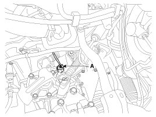
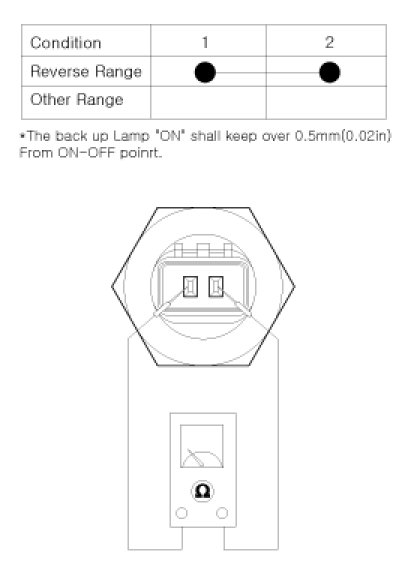
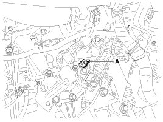

Backup Lamp Switch: Service and Repair
Inspection
1. Disconnect the back up lamp switch connector(A).

2. Check the continuity between no. 1 and 2 terminals of backup lamp switch. When the shift lever is in reverse, there should be continuity.
3. If necessary, repair or replace the backup lamp switch.

Replacement
1. Disconnect the back up lamp switch connector(A).
2. Remove the back up lamp switch (A).

3. Replace a new one and install the back up lamp switch.
Tightening torque:
29.4 - 34.3 N.m (3.0 - 3.5 kgf.m, 21.7 - 25.3 lb-ft)